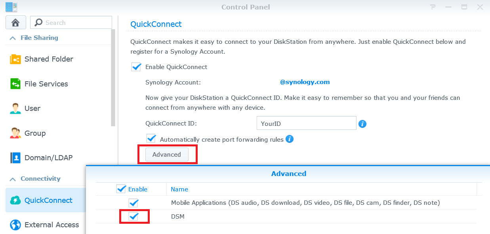

Dostęp do serwera Synology NAS przez Internet i udostępnianie plików

Przegląd
Dzięki QuickConnect możesz z łatwością łączyć się z serwerem Synology NAS za pośrednictwem Internetu bez problemów związanych z konfiguracją reguł przekierowania portów czy innych skomplikowanych ustawień sieciowych. QuickConnect umożliwia nawiązywanie połączenia z wykorzystaniem prostego, konfigurowalnego adresu, np. Quickconnect.to/przyklad.
1. Konfiguracja QuickConnect
- Wybierz pozycję Panel sterowania > QuickConnect.
- Zaznacz pole Włącz QuickConnect.

- Jeśli nie masz konta Synology, kliknij Zaloguj się przy użyciu swojego konta Synology lub zarejestruj konto. Wprowadź wymagane dane, a następnie kliknij przycisk OK. Jeśli masz już konto Synology, wprowadź informacje o koncie.

- Utwórz identyfikator QuickConnect ID w polu QuickConnect ID. Następnie kliknij przycisk Zastosuj.

- Pojawi się informacja o łączach QuickConnect. Użyj tych łącz, aby uzyskać dostęp do serwera Synology NAS. W tym przykładzie adresem systemu DSM jest http://Quickconnect.to/YourID.

- Jeśli nie widzisz łącza QuickConnect DSM, kliknij Zaawansowane i upewnij się, że system DSM jest włączony.
- Możesz użyć łącza QuickConnect DSM, aby uzyskać dostęp do serwera Synology NAS.

2. Udostępnianie plików na serwerze NAS za pomocą QuickConnect
Dzięki funkcji QuickConnect możesz z łatwością udostępniać pliki przechowywane na serwerze Synology NAS dowolnym osobom, bez konieczności przekierowywania portów.
- Najpierw włącz połączenie HTTPS, aby bezpiecznie udostępniać pliki. Wybierz pozycje Panel sterowania > Sieć.
- Zaznacz pole wyboru Włącz połączenie HTTPS, a następnie kliknij przycisk Zastosuj.

- Następnie włącz udostępnianie plików dla QuickConnect. Wybierz pozycję Panel sterowania > QuickConnect.
- Kliknij przycisk Zaawansowane i sprawdź, czy pole wyboru Udostępnianie plików jest zaznaczone.

Uwaga:
Podczas konfigurowania zaawansowanych ustawień usługi QuickConnect zaleca się zalogowanie do systemu DSM za pomocą lokalnego adresu IP lub nazwy domeny serwera Synology NAS.
- Możesz już udostępniać pliki za pomocą usługi QuickConnect. Otwórz File Station i kliknij prawym przyciskiem plik lub folder, który chcesz udostępnić. Następnie kliknij opcję Udostępnij łącza do plików w menu kontekstowym.

- Zostanie wygenerowane łącze udostępniania. Wystarczy udostępnić to łącze rodzinie i znajomym, którzy będą mogli pobrać udostępniony folder/plik.